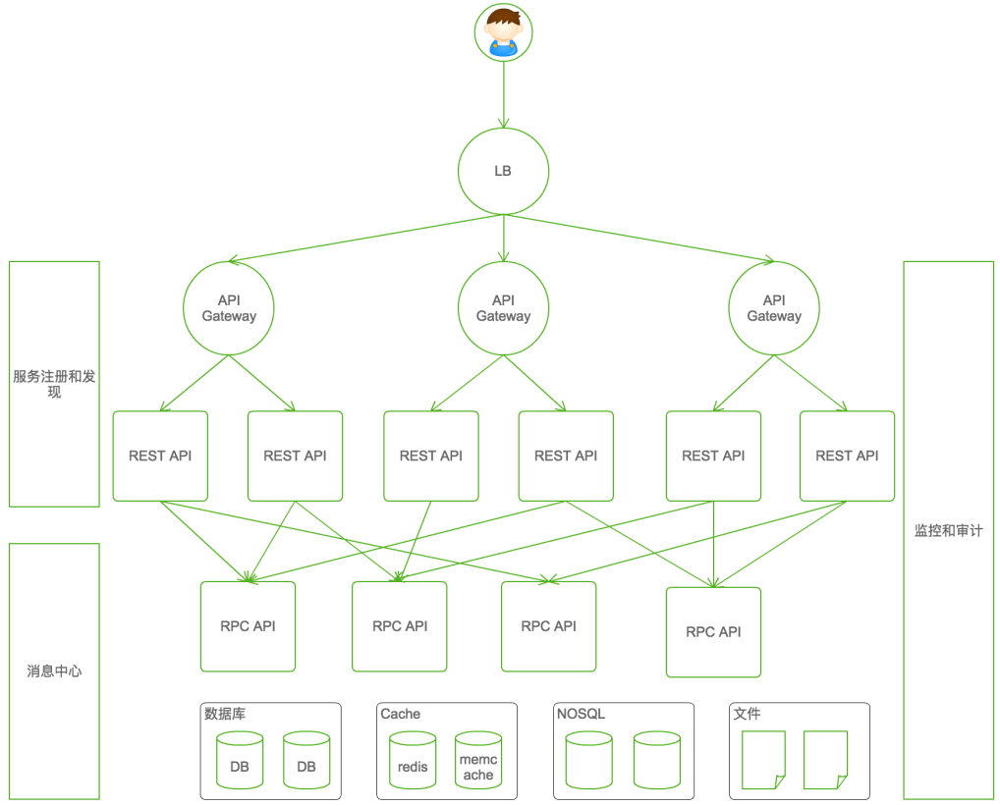

Go is not meant to innovate programming theory. It’s
meant to innovate programming practice. — Samuel Tesla
Golang学习笔记
微服务架构

微服务架构的核心
- 负载均衡：seasaw，caddy
- 服务网关：tyk，fabio，vulcand
- 进程间通信：restful，rpc，自定义
- 服务注册与发现：etcd，consul，serf
- 分布式调度：k8s，swarm
- 分布式配置：etcd，consul，mgmt
- 异步消息队列：NSQ， Nats
- 日志分析：Beats，Heka
- 服务监控/告警：open-falcon，prometheus
- APM（应用性能监控）：appdash，Cloudinsight，opentracing
- CI/CD：Drone
- 熔断器：gateway，Hystrix-go
Go的框架
- REST框架：beego，gin，Iris，micro，go-kit，goa
- RPC框架：grpc，thrift，hprose
Go的应用场景
GO适用于高并发低延迟
- 中间件系统
- 服务器编程
- 分布式系统
- 网络编程
- 云平台应用
- 数据库系统
- 运维系统
- 云存储系统
- 容器类系统
Go优点
- 出身名门，血统纯正：Google开发，2009发布，系统语言
- 开发效率，运行效率
- 类C语法，内置GC，编译快速，调试方便
- 多核支持，轻量并发，简易同步
- 组合无对象，无侵入接口
- 网络编程必备库，系统编程必备库
- 交叉编译，无依赖部署
- 编译检查，编码规范，工程工具